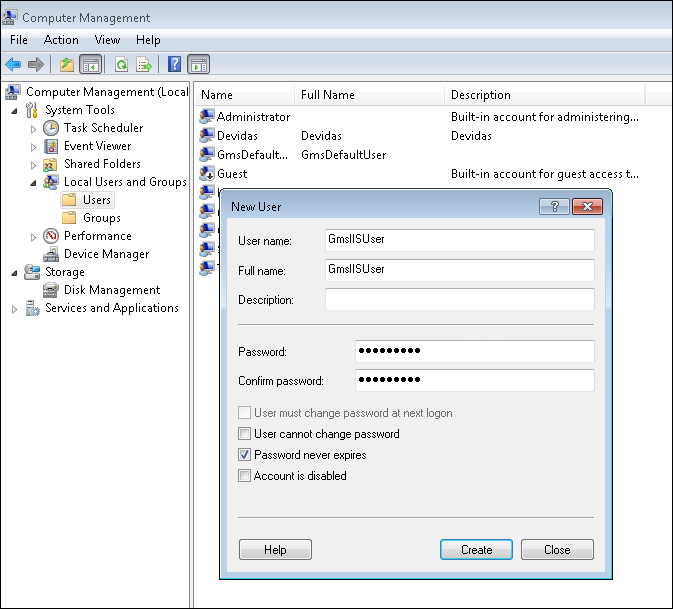
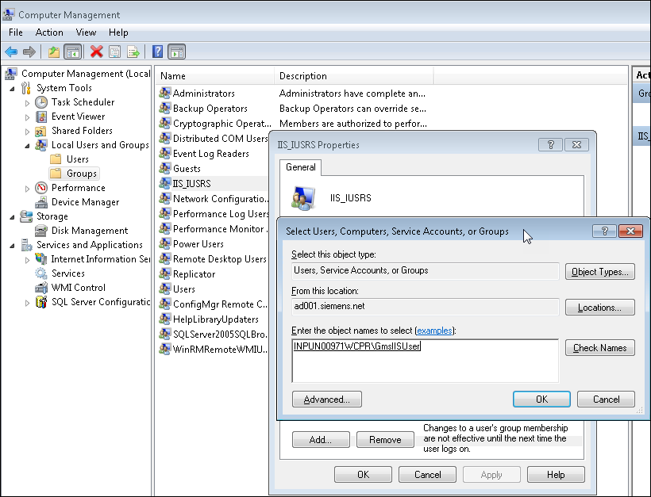
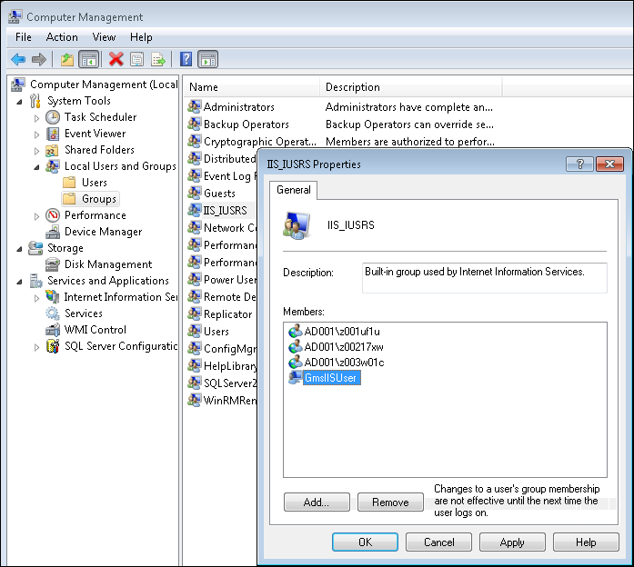

Create an IIS User and Assigning it to the IIS_IUSRS Group
For detailed information, see Microsoft help.
- Run Computer Management from the Start menu.
- From Local Users and Groups and in the context menu, select New User and do the following:
a. Enter a user name. For example, GmsIISUser.
b. Enter a full name.
c. Enter and confirm the password.
d. Select Password never expires if appropriate for the requested IT security.
e. Click Create. 
- Once the user account is visible in the Users folder, assign the GmsIISUser to the IIS_IUSRS group by performing the following steps:
a. From Groups folder, select IIS_IUSRS group and right-click to open a menu.
Click Add to Group to open the IIS_IUSRS Properties dialog box.
b. Click Add to open Select Users, Computers, Service Accounts, or Groups dialog box.
c. Enter the created IIS user name.
d. Click Check Names and check if the correct user was found.
e. Click OK and close the IIS_IUSRS Properties dialog box. 
- Verify that the GmsIISUser is added to the IIS_IUSRS group.
